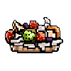
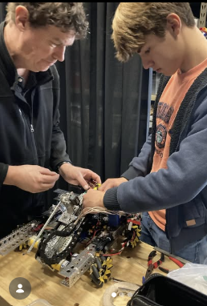
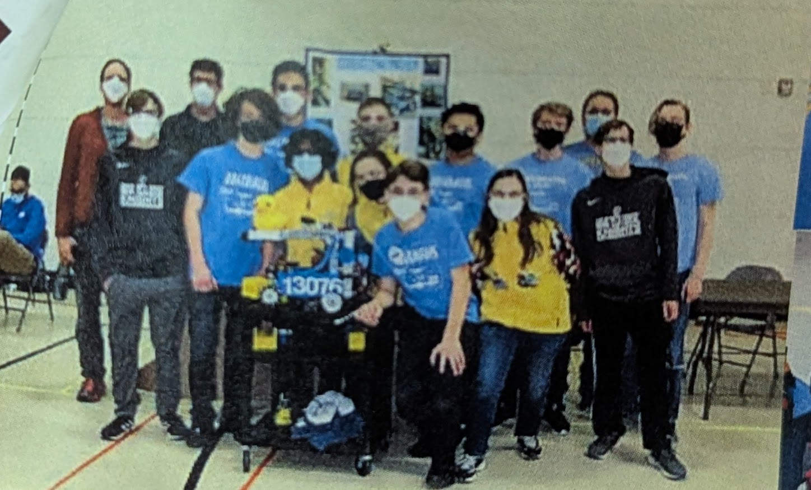
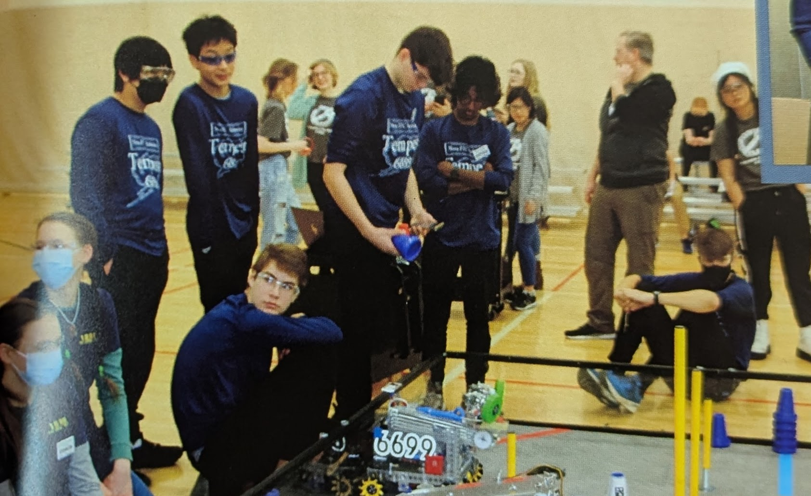
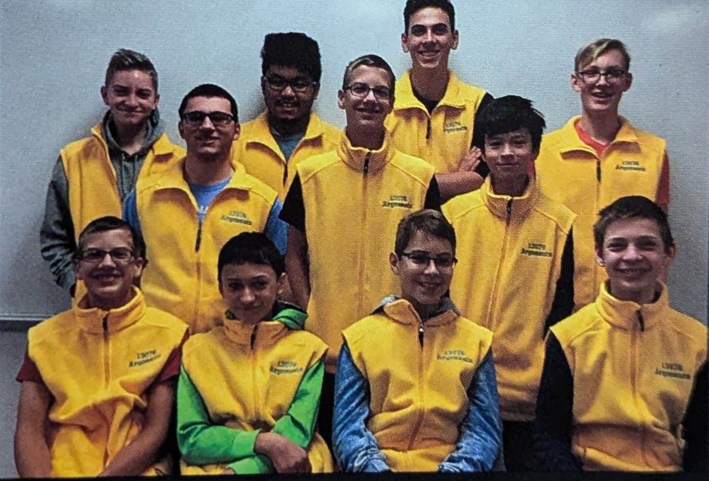
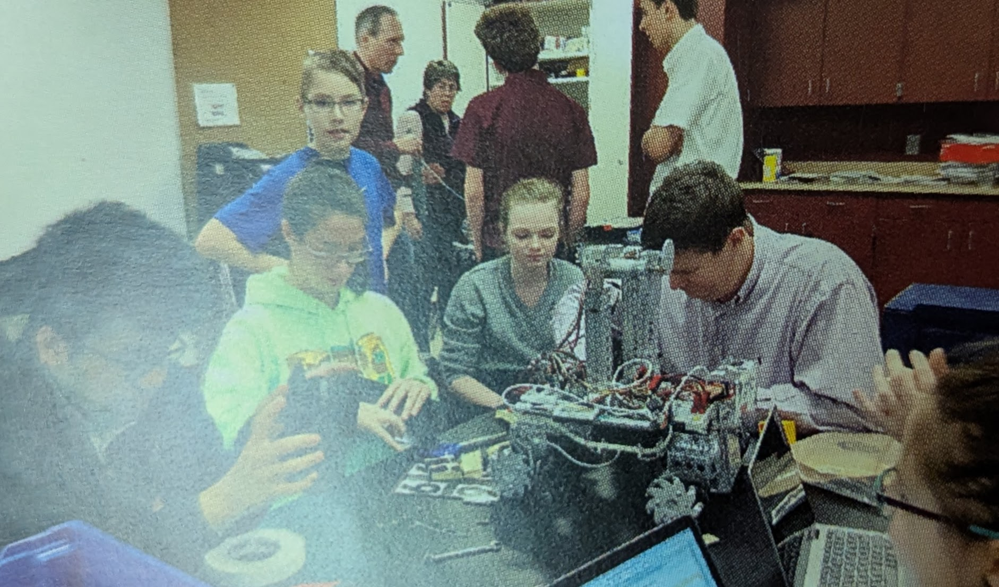
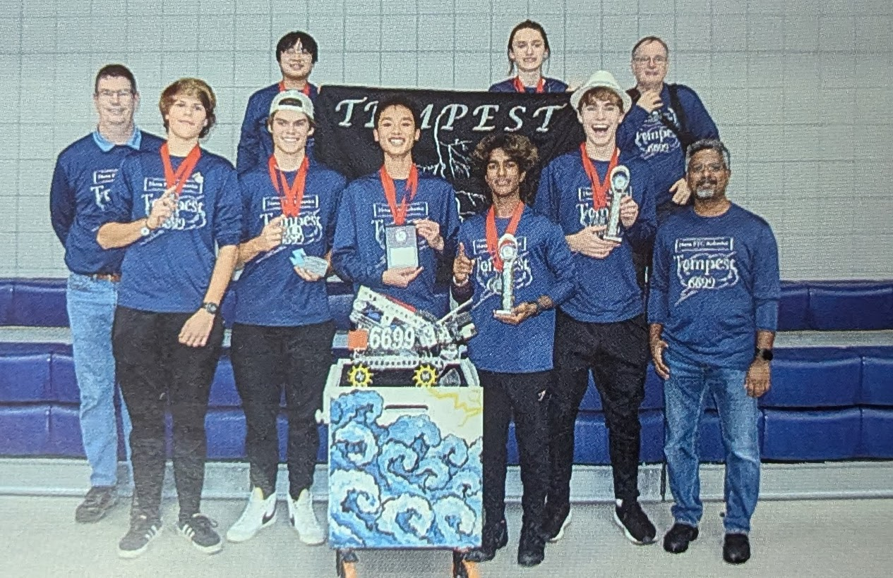

Do you like blueberry muffins? (There's only one right answer)
Do you like blueberry muffins? (There's only one right answer)

Here's a cake! Hope you like fruit (without the blueberries)
If not, then that's YOUR fault! Just kidding! I hope you like it!
Time to blow out the candles! Click on each candle flame to blow it out!
A little bit of 15 years






And finally, a letter from students and mentors to you!
Wait is that who I think it is? (Then secretely bribe him 5 bucks just to see if its him) Hey Paul, Rhea here! I just wanted to say how grateful I am for everything you’ve done for the team and for keeping robotics going all these years. I still remember the first time I met you when my brother was in FTC—I came for the food, and you told me that riddle about your age and school 🤣. Thanks again for sticking with us for so long, it really means a lot!
Paul It has been a pleasure working with someone with such a positive influence on dozens of young people over the years. Your guidance and humor have inspired students to experiment and discover robotics, opening their eyes to paths and possibilities in their future they may never have thought they were capable of. Thank you for the endless hours of commitment, making robotics accessible to everyone, and keeping the stress manageable by making sure we don't take ourselves too seriously.
Hi Paul I'm extremely grateful for your contributions to Nova's Robotics program. I especially appreciated the help you gave us new members with teaching us new skills in a way that focused on curiosity over ignorance. Your support made my first year in Robotics very enjoyable and taught me a lot of new skills in a supportive community. Thank you!
Hi Paul! Hope you havn't been too bored without me! I had a really good time doing robotics because of you. I learned a lot about materials and how to put things together to complete a task. It was really helpful how you taught me to use the scary machines to make prototypes and how to do it safely or whatever. I have a lot of skills now to use with my own projects and with future robotics competitions. Thanks Paul!!!
Hey Paul! By official Nova Robotics decree, you are the designated person to blame for everything today. Fair is fair! It's been way too long, hope you are doing well! Paul! Two seasons wasn't nearly enough time. It’s been an absolute blast watching you work with the students. Your positivity, your humor, and your knack for keeping everyone engaged are completely top-tier. Honestly, watching you mentor reminds me of the people I looked up to most as a kid. I’ll be honest, I was really hoping you’d stick around for another season to work your magic on my boys—they could definitely use a dose of your signature inspiration! Your character, your laughs, and your presence will be hugely missed by all of us. Thank you for an incredible 15 years. Enjoy your well-deserved free time!
Long time no see! I am so thankful to have had you as my mentor, and I couldn’t have asked for anyone better. You taught me about problem-solving, you proposed innovative solutions I would never have thought of, you provided a different perspective with years of experience and a completely different skillset. You helped shape me into the leader and designer I am today and I wouldn’t be nearly as good at robotics without you as my mentor. You are the perfect combination of humor and seriousness for a brand new recruit. You created a welcoming atmosphere and got rookies doing hands on tasks as quickly as possible, teaching them new skills day one. Your organization and management of our relationship with the school has saved us a lot of headaches and hopefully will continue to do so in the future. Your genuine connection with other teams and the community and your humorous exchanges with others is amazing and loved by all. You deserve one hundred compass awards for all that you have done for our team, robotics at Nova, all the people who passed through Nova Robotics (as a registered team member or just a friend hanging out), and the community as a whole. All in all I’m so grateful that I got to have you as my mentor and my friend.
Hello Paul, it's been a little while. I just wanted to thank you for all your help with robotics. You helped teach me how to solder, cut and bend all sorts of things. You helped me learn how to design and build solutions. Thank you so much.
I hope you've been doing well! I know it's been a while, but I just wanted to thank you for everything you've done for Nova's FTC program. Your guidance and encouragement made a huge impact and I am so grateful for the time and effort you put into helping us grow and improve--not only as team members but also as people. Your help inspired us even at our lowest. And even at our highest-- when we thought nothing could go wrong--your help guided us through difficult challenges in building, designing, and refining our robot. I will always remember your humor and wit putting a smile on people's faces. Picking someone to "blame" is not only hilarious but helped bring the team closer together. Paul, your words continue to inspire me and I'm sure they continue to inspire the generations of students who participated in FTC. Thank you for your 15 years of service and I wish you the best!
Hey Paul hows it going it’s your favorite coder! Thank you for your years of mentoring our team and making sure that everyone gets a hand in on the teamwork. Although there’s been many times that we’ve had to put up with your "wisdom,” we still appreciate the good and the bad you put us through. Really though you have made robotics a memorable thing in my life and I thank you again for the time and effort you put into us. I’m glad to have gone through this program and meet you and everyone else as well as experience the fun of robotics. Thank you again Paul I appreciate you greatly, except when you decide that I need more character building per say.
Hey dad! 14 years since you joined the program? Everyone, especially me, is grateful for your passion and willingness to put up with Rovn on our behalf. I couldn’t be more thankful for you doing so much so I can enjoy my passions week after week. You’ve taught me so much, you’re the best!
Hihi! I still remember the first day of robotics and being absolutely baffled that you trusted me with an electric sander the size of my head. Your ability to encourage and explain complex ideas, all the while allowing students to lead and not be led is what I found to be the core of our robotics team. More than anything, I think my brief two years gave me so much confidence to simply try, and "trying" single-handedly got me through this school year. Robotics taught me to be okay as the only freshman at a club, the only girl in the classroom, or only student at TA office hours. Hopefully I can be just as wise as you one day :) Thank you for being a mentor all these years and keeping STEM alive at Nova!
Do you wish to proceed?
Paul
It's difficult to put into words just how much you mean to all of us. 15 years of showing up.
Countless students.
One incredible mentor.
You believed in us through the highs and the lows, and because of that, you have changed more lives than you know.
Nova Robotics will forever carry your name, your kindness, and a little bit of you in everything we build.
Thank you, Paul. For everything.